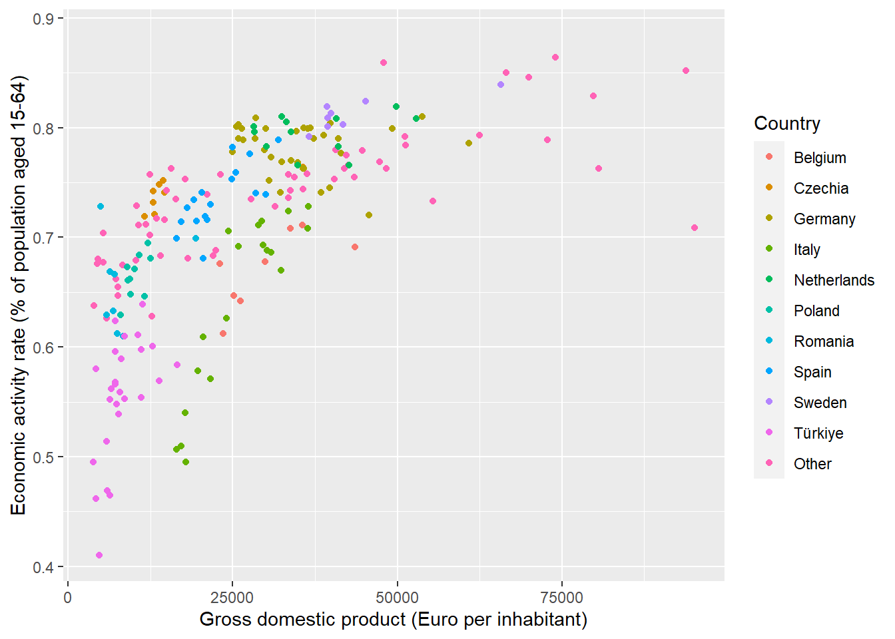
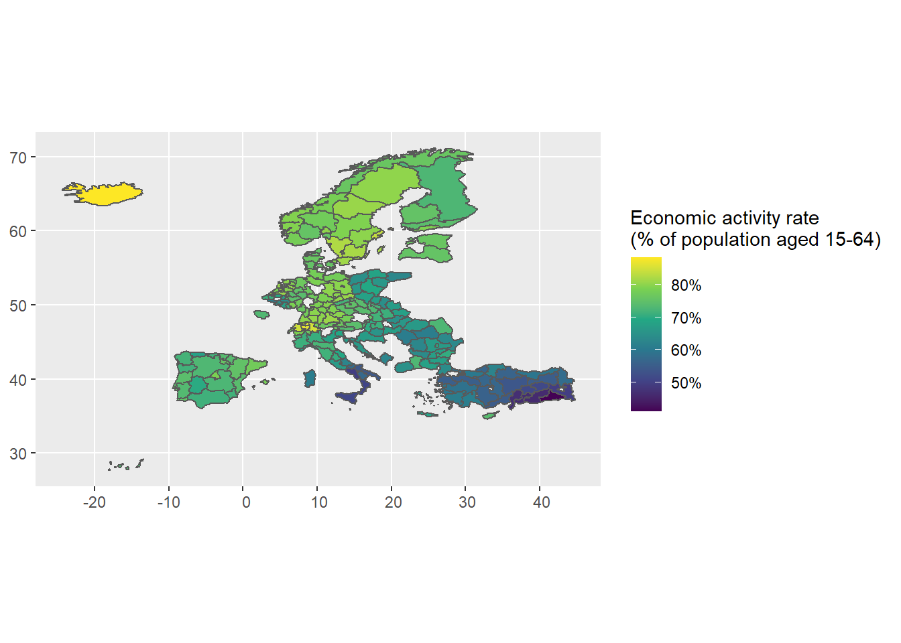
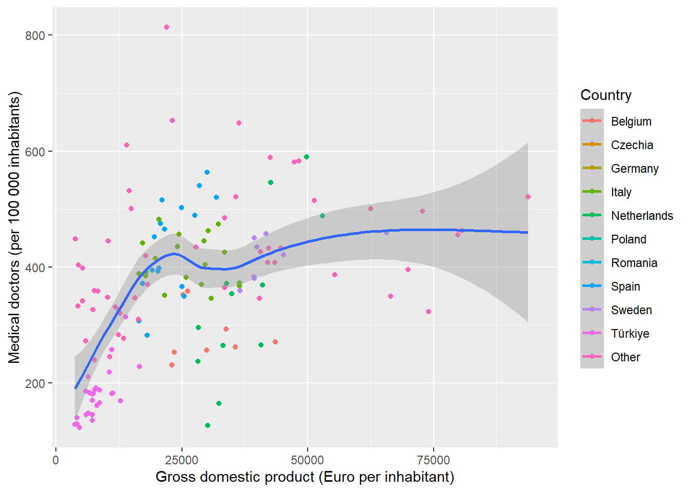

Supplementing the Rosés-Wolf database on regional GDP
Purpose
We want to supplement the database on regional GDP that we are going to provide to students.
I have collected a whole range of data at the NUTS2 level (though it is only for the year 2015.
They are shown in the table below, where the header is coloured blue for the category:
| List of indicators |
| Agriculture |
| Employment rate (% of population aged 20-64) |
| Gross domestic product (PPS per inhabitant in % of the EU-27 average) |
| Gross domestic product (PPS per inhabitant) |
| Livestock farming, bovine animals (1 000 heads of livestock) |
| Livestock farming, Dairy cows |
| Livestock farming, Live goats |
| Livestock farming, Live sheep |
| Livestock farming, Live swine, domestic species |
| Population (persons) |
| Population density (persons per square kilometre) |
| Production of cow milk on farms (1 000 tonnes) |
| Unemployment rate (% of labour force aged 15-74) |
| Economy |
| Employment rate, Females (% of population aged 20-64) |
| Employment rate, Males (% of population aged 20-64) |
| Employment rate, Total (% of population aged 20-64) |
| Gross domestic product (Euro per inhabitant in % of the EU-27 average) |
| Gross domestic product (Euro per inhabitant) |
| Gross value added at basic prices (million EUR) |
| Income of private households, Balance of primary incomes/National income, net (PPS per inhabitant, based on final consumption) |
| Income of private households, Disposable income, net (PPS per inhabitant, based on final consumption) |
| Real growth rate of regional gross value added, Index, 2015=100 (% change on previous year) |
| Real growth rate of regional gross value added, Percentage change on previous period (% change on previous year) |
| Education |
| Adult participation in education and training (% of population aged 25-64) |
| Early leavers from education and training (% of population aged 18-24) |
| Employment rate of recent graduates (% of population aged 20-34) |
| Participation in early childhood education (% of 4 year-olds) |
| Participation in education, Primary and lower secondary education (levels 1 and 2) (%) |
| Participation in education, Tertiary education (levels 5-8) (%) |
| Students in upper secondary education, Upper secondary education - general (%) |
| Students in upper secondary education, Upper secondary education - vocational (%) |
| Tertiary educational attainment, Females (% of population aged 25-64) |
| Tertiary educational attainment, Females (% of population aged 30-34) |
| Tertiary educational attainment, Males (% of population aged 25-64) |
| Tertiary educational attainment, Males (% of population aged 30-34) |
| Tertiary educational attainment, Total (% of population aged 25-64) |
| Tertiary educational attainment, Total (% of population aged 30-34) |
| Young people neither in employment nor in education and training (% of population aged 15-24) |
| Health |
| All causes of death (crude death rate) |
| Death due to cancer (crude death rate) |
| Death due to diseases of the circulatory system (crude death rate) |
| Death due to diseases of the respiratory system (crude death rate) |
| Hospital beds (per 100 000 inhabitants) |
| Medical doctors (per 100 000 inhabitants) |
| Labour Market |
| Economic activity rate (% of population aged 15-64) |
| Employment rate, From 15 to 24 years |
| Employment rate, From 20 to 64 years |
| Employment rate, From 55 to 64 years |
| Long-term unemployment share, Females (% of labour force aged 15-74) |
| Long-term unemployment share, Males (% of labour force aged 15-74) |
| Long-term unemployment share, Total (% of labour force aged 15-74) |
| Unemployment rate, Females (% of labour force aged 15-74) |
| Unemployment rate, Males (% of labour force aged 15-74) |
| Unemployment rate, Total (% of labour force aged 15-74) |
| Young people neither in employment nor in education and training (% of population aged 15-24) |
| Youth unemployment rate, Females (% of labour force aged 15-24) |
| Youth unemployment rate, Males (% of labour force aged 15-24) |
| Youth unemployment rate, Total (% of labour force aged 15-24) |
| Population |
| Infant mortality rate (deaths per 1 000 live births) |
| Life expectancy at birth, Females (years) |
| Life expectancy at birth, Males (years) |
| Life expectancy at birth, Total (years) |
| Population change, Crude rate of natural change of population (per 1 000 persons) |
| Population change, Crude rate of net migration plus statistical adjustment (per 1 000 persons) |
| Population change, Crude rate of total population change (per 1 000 persons) |
| Population, 65 years or over (persons) |
| Population, From 15 to 64 years (persons) |
| Population, Less than 15 years (persons) |
| Population, Total (persons) |
| Total fertility rate (live births per woman) |
| Science And Technology |
| Employment in high - tech sectors (% of total employment) |
| Human resources in science and technology (% of labour force) |
| Intramural R & D expenditure (% of gross domestic product) |
| Researchers in all sectors (% of total employment) |
| Transport |
| Air transport of freight (1 000 tonnes, loaded and unloaded) |
| Air transport of passengers (1 000 passengers, arrivals and depatures) |
| Fatal road accidents (per million inhabitants) |
| Maritime transport of freight (1 000 tonnes, loaded and unloaded) |
| Maritime transport of passengers (1 000 passengers, embarked and disembarked) |
| Motorisation rate (passenger cars per 1 000 inhabitants) |
| Networks, Motorways (km per 1 000 square km) |
| Networks, Total railway lines (km per 1 000 square km) |
We can draw plots list this with the data: showing the relationship between economic activity and gdp

We can also make a map of the Economic Activity Rate:

This is the relationship between GDP and medical doctors per 100 000 inhabitants.
